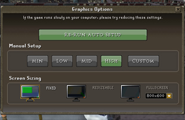
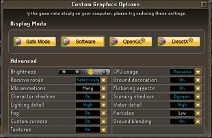

Controls - Display Options
Introduction
 To access your display settings, go to the 'Game Options' tab and select 'Graphics Options'. This will enable you to adjust the settings you have access to in your detail settings.
To access your display settings, go to the 'Game Options' tab and select 'Graphics Options'. This will enable you to adjust the settings you have access to in your detail settings.


- Visible Levels
This option allows you to choose whether or not to see the levels above and below you in certain areas of RuneScape. If this is turned off, you will see black areas above and below you instead. Only available in Safe Mode.
- CPU usage
Here you can set how much of your computer's CPU resources RuneScape is allowed to use; the lower you set it, the less of your CPU's resources will be used by the game. This can be useful for anyone playing the game on a laptop computer, for instance, to help keep the machine cooler. Having less of the CPU's resources available can affect the game's performance, though, depending on your computer and what other settings you have turned on, so you'll need to try out the settings to find out which works best for you.
- Remove Roofs
You can turn this to 'Always' or 'Selectively'. If it is set to 'Always', you will not see the roofs of any buildings unless they are on a level below you. If it is set to 'Selectively', roofs will only be removed from buildings when they would obscure your view of your character (i.e. when you enter a building, or tilt the camera to put a roof in the way).
- Ground Decoration
Ground decoration includes small stones, long grass and the like. You might like to remove these if you find that the game runs slowly, although they add a great deal of extra detail to any area.
- Texture Detail
This controls the level of detail that your computer renders in Standard Detail or Safe Mode. Obviously, setting this to 'High' will ensure that the world of RuneScape looks as good as possible, but a 'Low' setting may improve how well the game runs on your computer.
- Idle Animations
If set to 'Many', this will switch off the idle animations for players when there are over 200 players within the minimap area. When set to 'Few', it switches off idle animations when there are more than 50 players within the minimap area. When set to 'All', it turns off all idle animations. Idle animations are used when your character is standing and doing nothing.
- Flickering Effects
Flames in RuneScape, like flames in the real-world, often dim and flicker as they burn. Turning this on allows various lights to behave in the same way.
- Ground Textures
This option switches off some textures on the ground to increase frame rate at the expense of visual quality. Only available in Safe Mode.
- Character Shadows
This will toggle shadows for player and non-player characters. Turning this on will increase the realism of the game world, turning it off will increase the frame-rate.
- Scenery Shadows
You can switch scenery shadows between 'Dynamic', 'Static' and 'Off'. 'Dynamic' shadows casts shadows from all objects and matches their movement, 'Static' casts shadows that do not move, and 'Off' removes all shadows cast from objects in the game world. Only available in High and Standard Detail.
- Lighting Detail
This controls specular highlights - which allows smooth or shiny surfaces (like armour) to appear to reflect light - and light sources (such as lanterns and fires). Turning lights on will have a large effect on the game world, where torches cast light in spheres as they do in the real world. Turning this option off will return to the old style animated lights. Only available in High and Standard Detail.
- Water Detail
You can choose between high and low detail water. High detail water allows you to see the new riverbeds and other objects below the surface of the water, but is the most likely to negatively affect your frame-rate. Low detail water cannot be seen through (so things that are under the water do not need to be drawn), but you'll get the new water surface effects like rippled and subtle movement. If you are not playing RuneScape in High Detail, water will be textured but not animated. In Safe Mode, water will be a flat colour.
- Fog
This doesn't turn the area fog off, it simply pushes it into the back of your game screen. You might want to do this if you are in a foggy area and you think it is obstructing your view of your character.
- Particles
With this you can set the level of detail for particle effects to high, medium or low. Particles will be used for visual effects such as smoke, snow and magic effects, among other things.
- Anti-aliasing
This defaults to �none� but you can select 2x or 4x anti-aliasing if you want. Anti-aliasing smooths out the image when you are running in fullscreen, getting rid of jagged edges, for instance. The higher the multiplier, the smoother the image but the more work your graphics card must do for each frame. Only available in High Detail.
- Ground blending
This option blends any edges where a ground texture connects to another, different ground texture. This is most noticeable on paths, where the once angular lines will blend into the soil or grass that surrounds it. Only available in Safe Mode.
- Custom Cursors
This defaults to �off�. When turned on, your cursor, in many instances, will change when you hover over something in-game. For example, your cursor will change into a hand if you can use something, or an open door if you can open a door. These are the actions that will be performed if you left-click (on a two-or-more button mouse) or click and select the top-most option (on a one-button mouse).
~DirectX is a registered trademark of the Microsoft Corporation in the United States and/or other countries.

More articles in
Controls
|
|
|
Further Help
Need more help? Come chat with us!
|
|